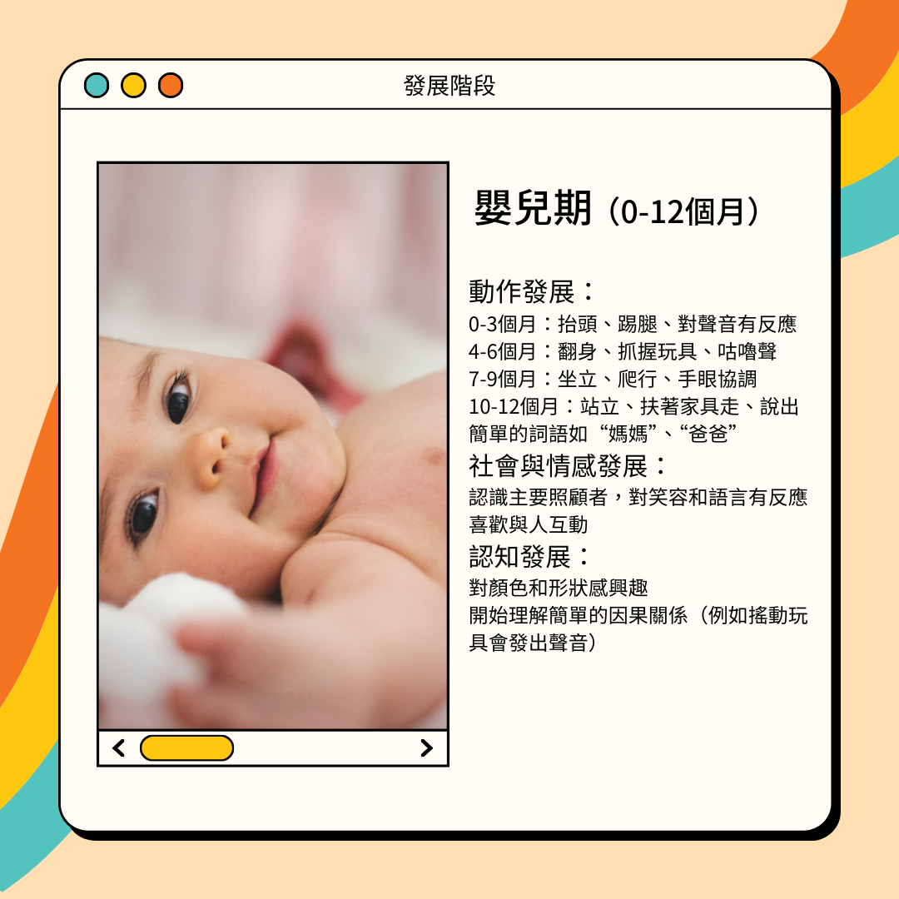
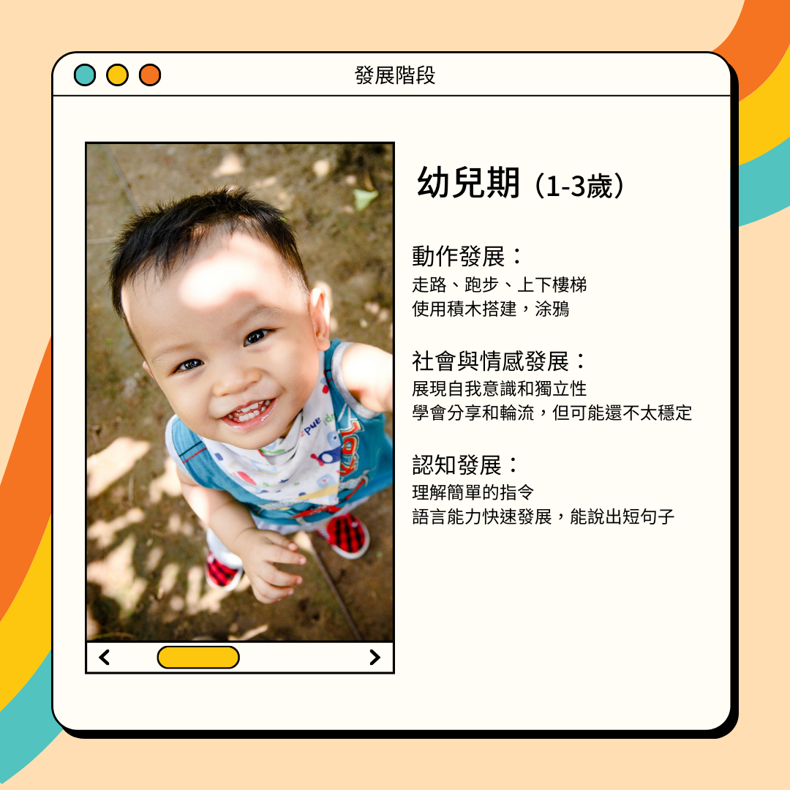
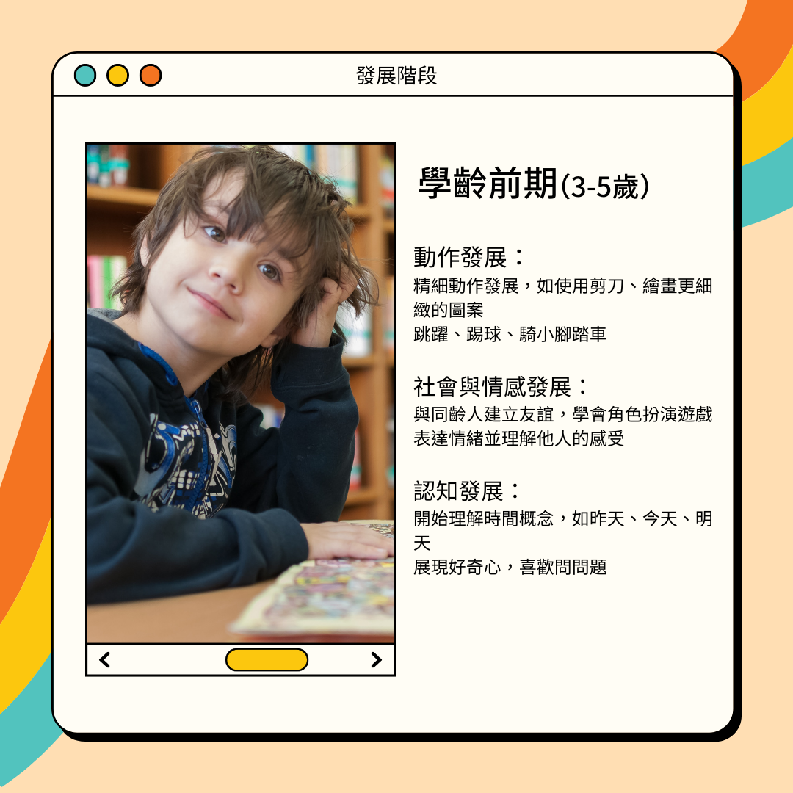

孩子的發展是重要課題，也是每個家長關心的。了解孩子在不同階段的發展特徵，可以幫助家長及早發現並支持孩子的成長需求。
兒童發展是一個整體過程，身體、認知、語言、情感和社交等各個方面是相互影響和交互作用的。發展是一個複雜而動態的過程，涵蓋了多方面的成長與變化。每一階段的經歷和學習都會對後續發展產生影響。
發展的四大原則
1. 發展是功能的成熟
孩子在成長過程中，隨著年齡的增加，他們的各項能力（身體動作、認知能力、語言能力和社交技能等）會逐漸變得更加成熟和穩定。隨著孩子語言發展成熟，在學習的過程中，更能提高孩子的認知能力，而在社交互動上，有助於情感發展和互動。
2. 發展有一定的順序
孩子的成長和發展是按照一定的階段和順序進行的，每個階段都有其特定的發展里程碑。孩子通常在學會爬行後才能學會走路，在學會單詞後才能組成句子。
3. 發展上有個別差異
這意味著每個孩子的發展速度和時間線可能會有所不同，即使他們遵循相同的發展順序。雖然兒童的發展遵循相似的階段和順序，但每個孩子的發展速度和模式都有所不同。
4. 發展會受先天與後天的影響
孩子的成長和發展是由遺傳因素和環境因素共同決定的。這兩者相互作用，塑造了孩子的各方面能力和特質。嬰兒期主要是生理和感官的發展，幼兒期注重語言和社交技能的提升，學齡期則是認知能力和學業成績的發展。
各年齡層發展重點速覽
透過以下四個階段的整理，掌握孩子從嬰兒期到學齡期的動作、社會情感與認知發展重點：



發展是一個漸進的過程，孩子會產生新的變化和成長，也會因個人特質差異、家庭背景和環境因素而有所不同，每個人的成長曲線也都是獨一無二的。因此，爸媽可以多陪伴、多觀察，就能更了解家中的孩子。若家長想要進一步的資訊或了解孩子的需求，也歡迎聯繫我們讓我們知道您的需求，和您一起在教養路上變得更優雅！